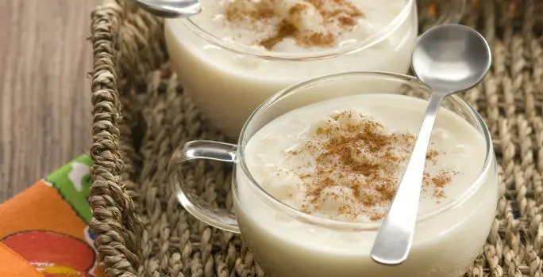

Retornar ao início
Canjica

Descrição
Receita de canjica cremosa feito com milho branco, leite condensado, leite e canela
Ingredientes
- 1 xícara e meia (chá) de milho para canjica demolhado
- 1 leite condensado (lata ou caixinha)
- 1 medida (lata) de leite integral
- 1 pitada de canela em pó para polvilhar
Preparo
- Em uma panela de pressão, leve a canjica demolhada ao fogo com 2 litros e meio de água fria, reduzindo o
fogo após a fervura
- Deixe cozinhar por cerca de 1 hora
- Depois de cozida, retire do fogo, deixe sair toda a pressão e abra a panela
- Junte o leite condensado, o leite integral e deixe ferver por mais 5 minutos, mexendo de vez em quando
até
ficar cremosa
- Despeje em uma tijela funda e sirva polvilhada com canela
Outras receitas